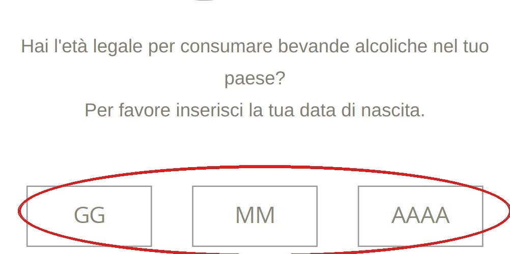
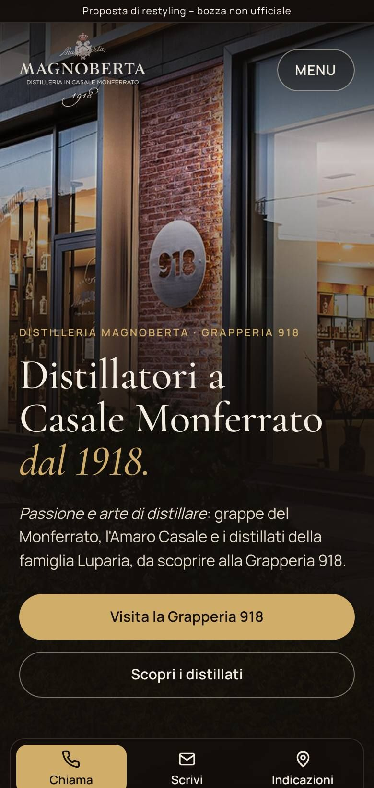
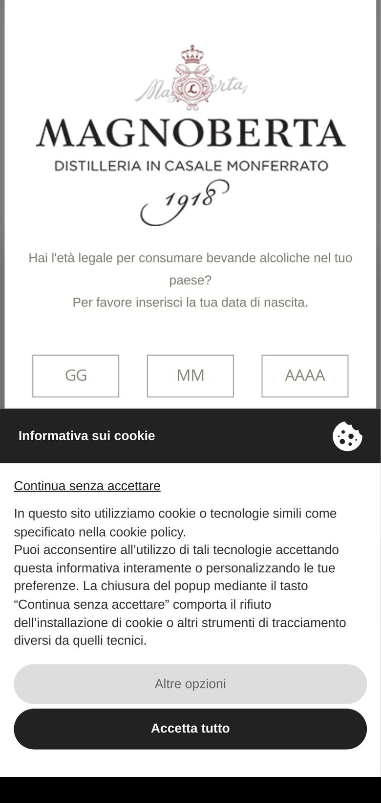
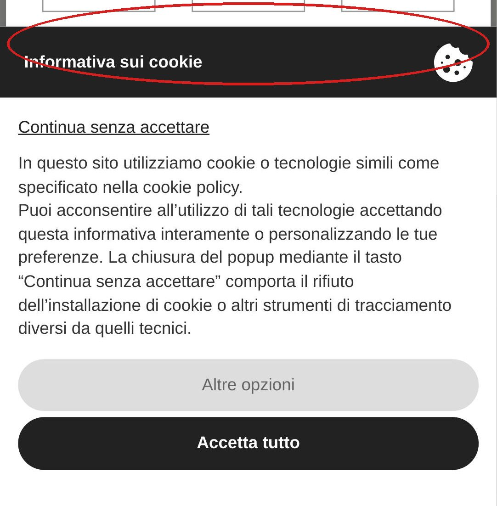

1
Bisogna scrivere la data di nascita
Prima di vedere qualsiasi contenuto il sito chiede giorno, mese e anno in tre caselle da compilare.
Distilleria Magnoberta · Casale Monferrato
La prima schermata di magnoberta.com vista da un telefono, oggi e con la nuova homepage che abbiamo preparato.


OggiCon noiTrascina il cursore, anche con il dito.

Prima di vedere qualsiasi contenuto il sito chiede giorno, mese e anno in tre caselle da compilare.

Sopra la richiesta dell'età si apre anche l'informativa sui cookie, che occupa metà dello schermo subito sotto le caselle della data.
Nella prima schermata si vedono il logo e le due finestre: nessun prodotto, nessun numero di telefono, nessun indirizzo della Grapperia 918.
Tempo per vedere il contenuto principale (LCP)
2,6 s0,7 s
Peso della homepage
2,3 MB1,4 MB
Richieste al server
7426
Misure del 24 ottobre 2026 con lo stesso strumento (Chrome su telefono Pixel 7, cache vuota) sulla homepage attuale e sulla bozza pubblicata.